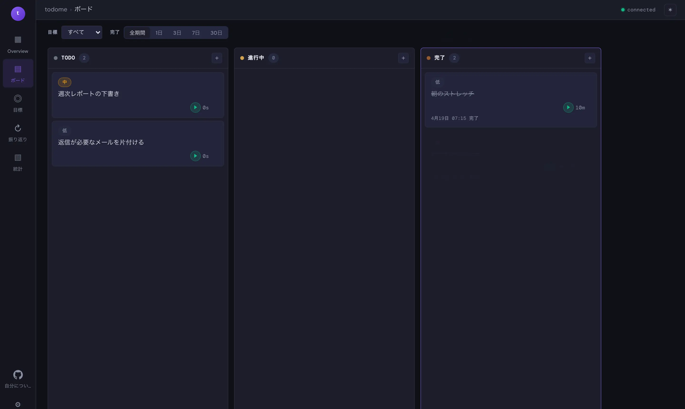
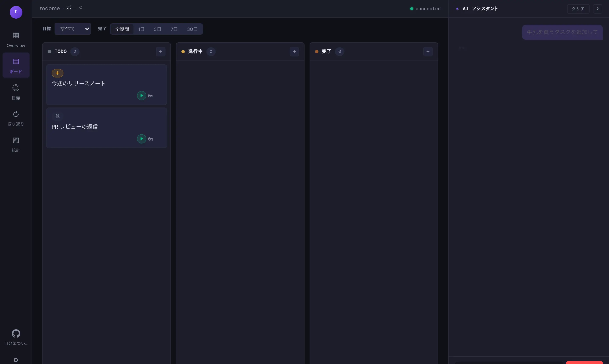
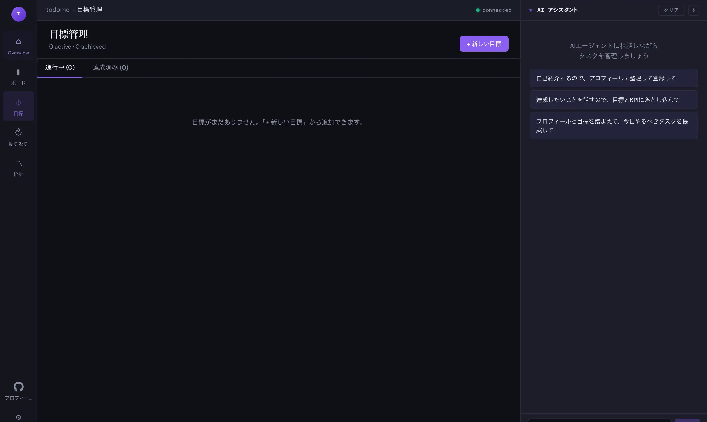
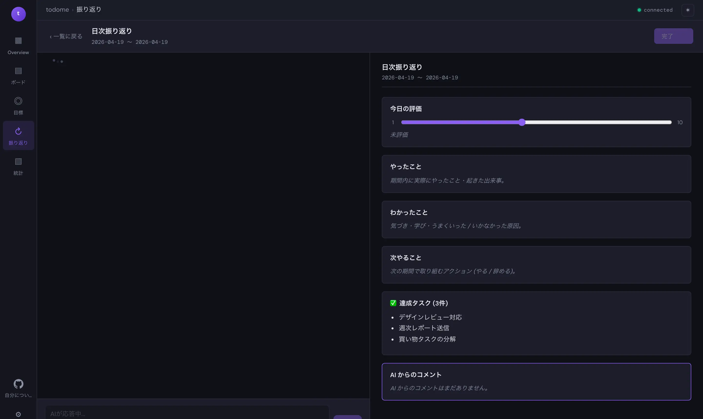
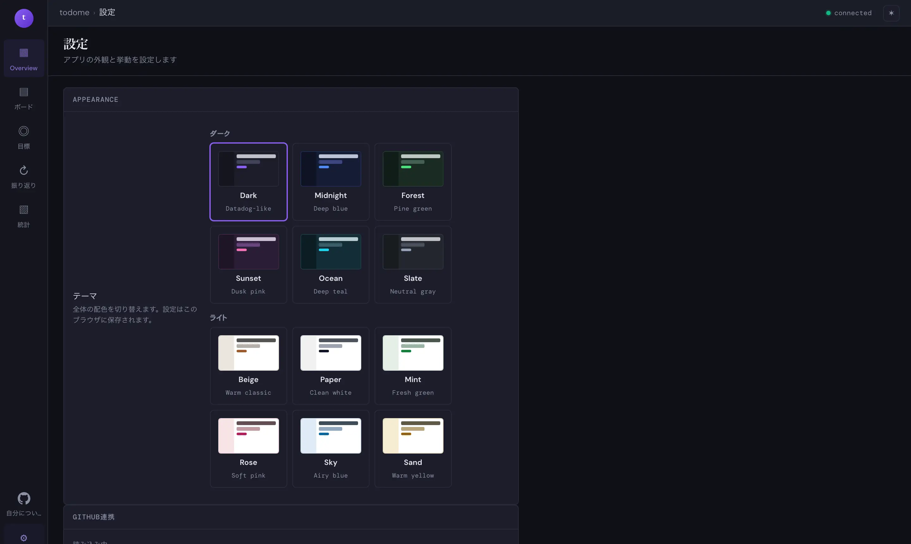
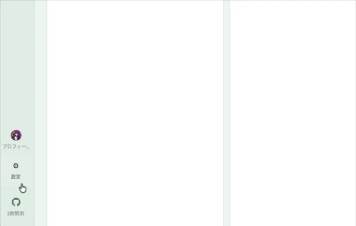
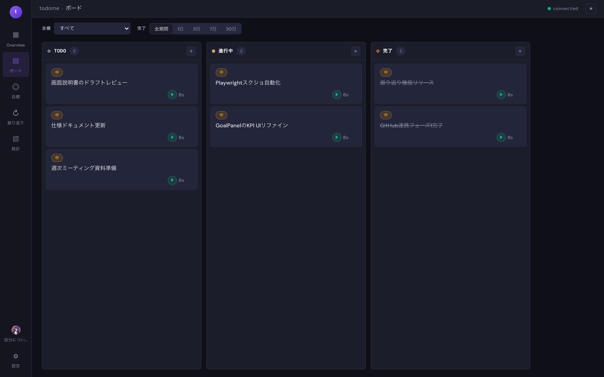
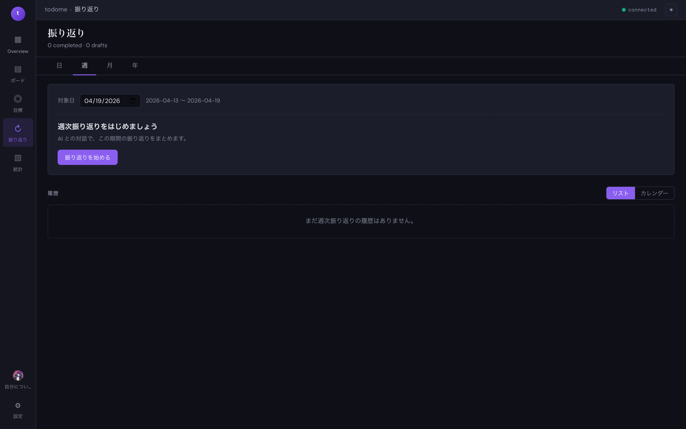
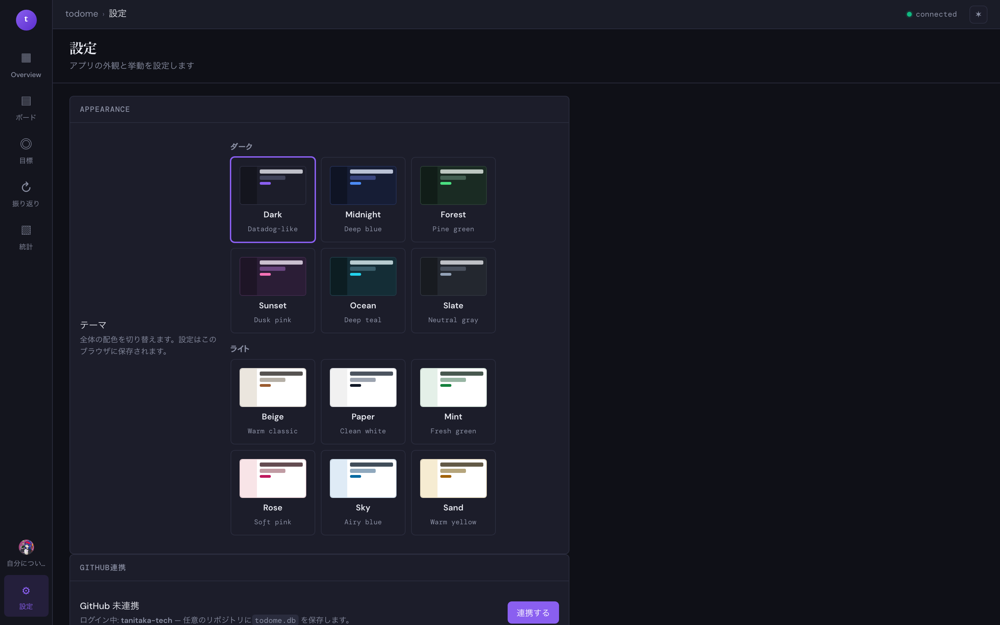

todome 画面説明書
TrelloライクなKanbanボードでタスクを管理しつつ、 目標やふりかえりの文脈を把握したAIアシスタントに相談できるアプリ — todome の各画面を紹介します。






画面一覧

Overview
今日の作業時間、進行中タスク、完了履歴などを一画面で俯瞰するダッシュボード。

ボード
TODO / 進行中 / 完了 の3カラムのKanbanボード。タスクの追加・移動・時間計測ができます。

目標
達成したいゴールとKPIを登録し、進捗を追跡します。

振り返り
日/週/月/年の4粒度でAIと対話しながら振り返りを記録します。

統計
作業時間の可視化と、目標との紐付け分析。

プロフィール
現在の状態・バランスホイール・行動指針をAIに渡すコンテキストとして整理。

設定
テーマ切り替え・GitHub 連携・AI ツール権限の設定。
共通機能
AIアシスタントパネル
どの画面からも右側の AI パネルを使って Claude Agent SDK (Sonnet) に相談できます。 現在表示中のボード・目標・プロフィールが文脈として渡されるため、 「今日やるべきタスクを提案して」のような曖昧な指示でも状況に沿った回答が返ります。

ヒント:
AI はタスクの追加・並び替え・目標の更新など、ツール呼び出しで実際にボードを書き換えます。
承認が必要な操作はチャット内で確認プロンプトが表示されます。